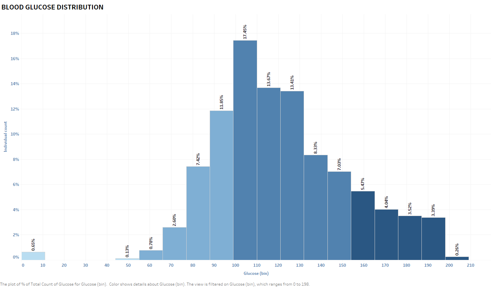

Per Tableau, data visualization is the graphical representation of information and data. By using visual elements like charts, graphs, and maps, data visualization tools provide an accessible way to see and understand trends, outliers, and patterns in data. We touch upon data visualization in the EDA section using Python only, however there are many more tools in the market that provide superb visualization effect and they are easy to use as well, namely Tableau, Google DataStudio, Microsoft PowerBI, Python Matplotlib, Seaborn, and more. In this project we will utilize commercial product to review the Pima Indian Diabetes database. We will unravel the information in the database and review its trend and hidden information.
Table 1 Pima Indian Women Diabetes Percentage
Left donut chart was plotted using Google DataStudio and right donut chart using Tableau. Without going any further into the analysis, we already can tell that there were 34% of diabetes out of 768 indivisuals. That is quite high! It is concerning.
Table 2 Age distribution

Table 2 Y-axis is the count of subject and X-axis is the distribution of age. Shockingly test subjects are mostly young generation, not of age to get diabetes.
Table 2 Age distribution
Deep blue color indicates postive as diabetes and light blue as non-diabetic. Another shocking discovery, age group 25 to 34, 35 to 44 and 45 to 54 made up 28% of diabetes percentage. Those were younger generation. This is getting more and more interesting!
Next we can look at BMI (Body Mass Index). Before we dwelve into that let's take a quick lesson from the medical infographic about BMI to understand the standard behind it. What's overweight what's not?
Table 3 BMI classification

Credit:
https://www.bbntimes.com/global-economy/origins-of-the-body-mass-index
BMI is the ratio of body weight over height. The higher the number indicates the more obese a person is. 19 is athletics type of BMI. 35 and above indicates a people with mobility issue and probably with a lot of medical conditions. So, now that we have a quick understanding of BMI, let's look at BMI in these database.
Table 4 Diabetes per BMI group
It seems like the data just keep showing us shocking information. There were 61.46% morbidly obese people and out of that 28.52% of them were diabetic.Not a whole lot of percentage in the healthy BMI group.
Table 5 Diabetes per BP group
Is diabetes related to blood pressure? From the plot in Table 5, diabetes rates seem not rasing with BP as it gets higher. Out of 74% of people with normal BP, 23.18% of them were diabetic and 7.94% in the prehypertension group. Diabetic rates were very low in other high blood pressure group.
The only thing that female can do and that man cannot is to get pregnant. Let's explore that category.
Table 6 Pregnancies frequencies in each age group
Table 6 X-axis are age groups and Y-axis is count of total pregnancies in that group. Honestly I am still surprise by the result. Female over age of 55 are still having babies. Majority of pregnancies though was from the age group of 25 to 34.
Table 7 Pergnancies vs diabetes
What conclusions can we draw from this plot? 38 of the female not pregnant have diabetes. 29 of them pregnant 1 time and have diabetes. It seems like the higher the pregnancies frequencies the less diabetic they became.
Table 8 Pregnancies vs BMI
We know from Table 4 that diabetes seems to occur more in the obese and overweight group. The question is, what's causing it? We don't have their dietary information so we can only use what's in the data to come to a conclusion. The area graph above indicates the pregnancies frequencies and their average BMI. 100% of them were either overweight or obese.
There are other information in the data that we can pursue, namely blood glucose level. Like BMI, let's take a quick tour before we dive in.
Table 9 Blood Glucose chart

Credit:
https://www.lark.com/blog/blood-sugar-chart/
I am going to assume that the blood glucose data were taken per standard procedure across each individual and that is taken after overnight fasting.
It seems like majority of them were between 100 to 110 Mg/DL. The darker the color the higher the concentration of blood glucose in their bodies. This population highly susceptible to the diabetes.
Table 10 Correlation between BMI and glucose whether pregnant or not
Blue line and dots indicate not pregnant, orange line and dots pregnant. Both trend lines indicate that their BMI go up with blood glucose whether they're pregnant or not.
A few graphs in this project is not enough to come to a conclusion on how and why Pima Indian Women are susceptible to diabetes. For further reading you can visit this site:
https://www.ncbi.nlm.nih.gov/pmc/articles/PMC4418458/
The article talks about thrifty gene and a genetically identical population live in two different environment. One is modern and the other one is their traditional environment. The article also explores energy expenditure and storage using a hormone call Leptin.
The LEP gene provides instructions for making a hormone called leptin, which is involved in the regulation of body weight. Normally, the body's fat cells release leptin in proportion to their size. As fat accumulates in cells, more leptin is produced. This rise in leptin indicates that fat stores are increasing.
All of that information were not in the database that we are using. The article above was exploring "why" of the becoming of diabetes. With our database, we can only explore how and that is enough to train an A.I. to do prediction.
created with
HTML Designer .